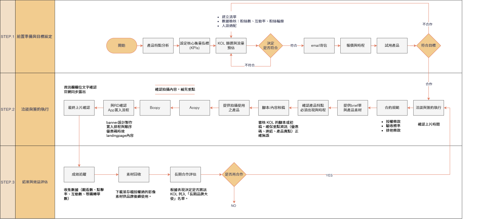

KOL 合作專案
KOL 影響者媒合與成效優化
提升曝光與轉換效率
2025/02-2026/05
主導 JetFi 年度 KOL 合作計畫，建立 SOP、素材模版與數據追蹤，達成高 ROAS 與顯著的下載成長。


2025/02-2026/05
主導 JetFi 年度 KOL 合作計畫，建立 SOP、素材模版與數據追蹤，達成高 ROAS 與顯著的下載成長。
成功媒合 10+ 位優質 KOL，整合素材並標準化上線流程。
單波 ROAS 高達 3.4，部分活動下載提升超過 500%。
以 UTM 與活動碼追蹤，建立回收指標與預算配置模型。
建立前置篩選、素材模版、A/B 測試腳本與成效回收機制，縮短上線時間並提升轉換一致性。

實際案例的下載、ROAS 與 CPM 分析。